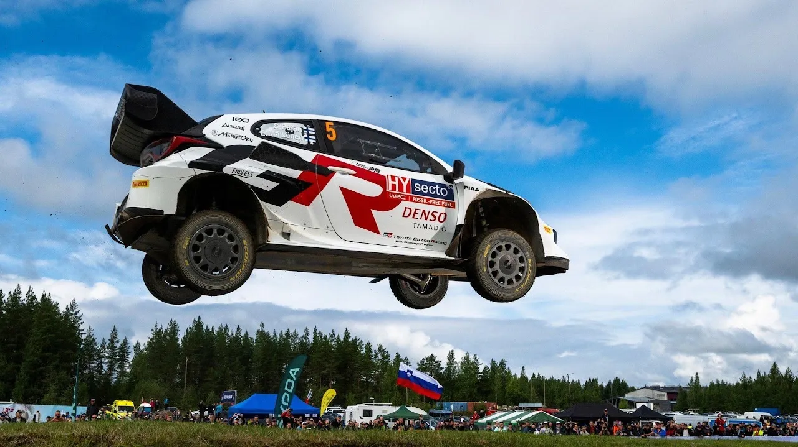
Every Points Scoring Driver's First Stage Win in the 2024 WRC Season
Sami Pajari made headlines in Rally Finland, as the young Finn scored his first career stage win in the top class on his debut! The Toyota protege became the 10th youngest WRC stage winner ever. So that got me thinking, what was every WRC driver's first stage win, and how about some other drivers in Rally2 machinery who have won a stage overall? Out of the 28 different drivers to have scored points this year, 17 have scored a stage win in the top class!
Thierry Neuville - SSS21 Rally Mexico 2012
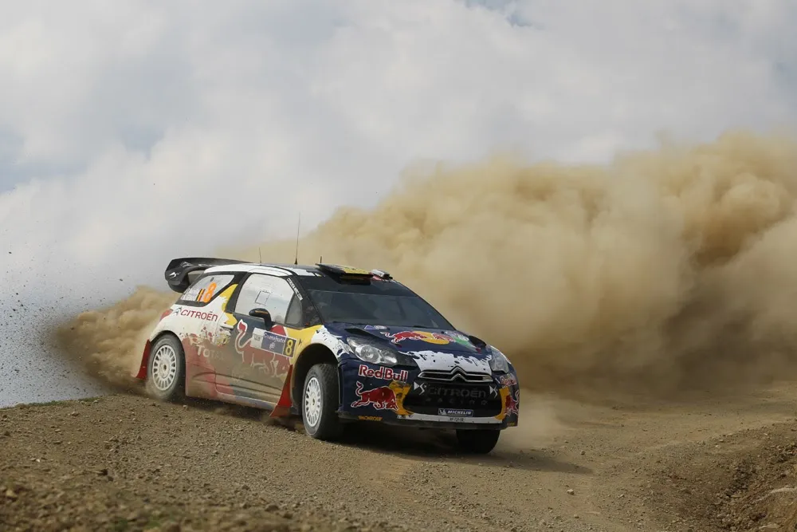
Michelin Motorsport Rally
Thierry Neuville got his first stage win on his 3rd ever WRC event! He won the 5th (!!!) run of the Autodromo de Leon on Sunday in Rally Mexico. Neuville had previously retired from the event on Friday, having hit a rock and damaging his DS3 WRC. He would finish the event in 13th.
Sebastien Ogier - SS2 Wales Rally GB 2008
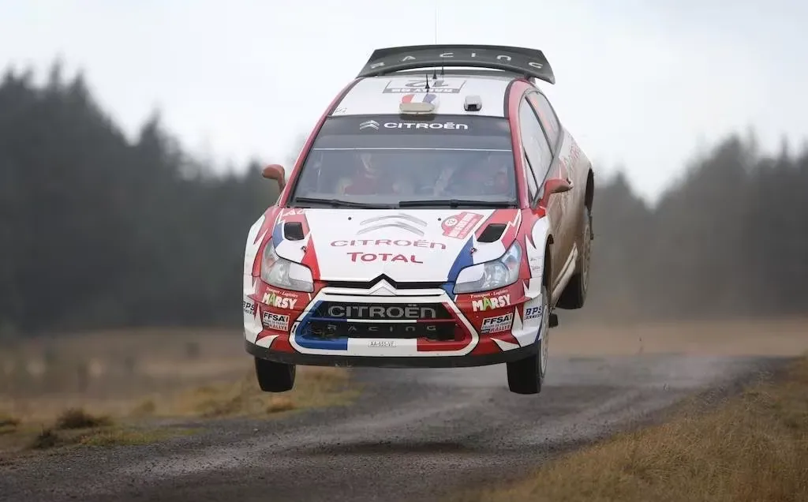
Red Bull Content Pool
Sebastien Ogier won on his first ever stage in a WRC car! The 8 times World Champion won the opening stage of Wales Rally GB, which was the first pass of a shortened Sweet Lamb, on his debut in the top class. In an event with very tricky conditions that saw stages shortened and cancelled, the Frenchman went off road and crashed from 9th on the first stage of Saturday.
Ott Tänak - SSS14 Rally Sweden 2012
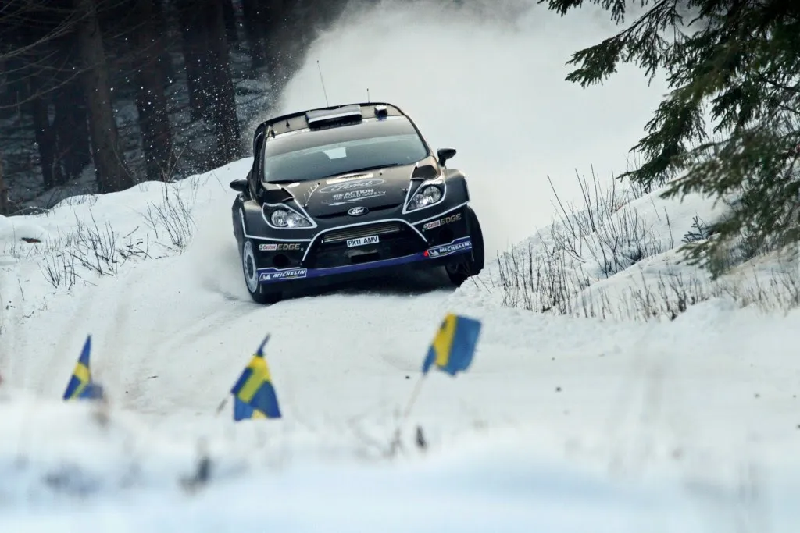
Michelin Motorsport Rally
Tänak's first stage win, similarly to Neuville, came on his 3rd ever event with a WRC car. The Estonian won both the first and the second pass of the spectator friendly Hagfors Sprint SSS. Tänak had gone off the road on the first stage of Friday and was as low as 50th. He also got stuck in a snowbank on SS12 as well. His rally would come to an end on SS22 after his Fiesta suffered a blown engine.
Elfyn Evans - SS18 Rallye Deutschland 2014
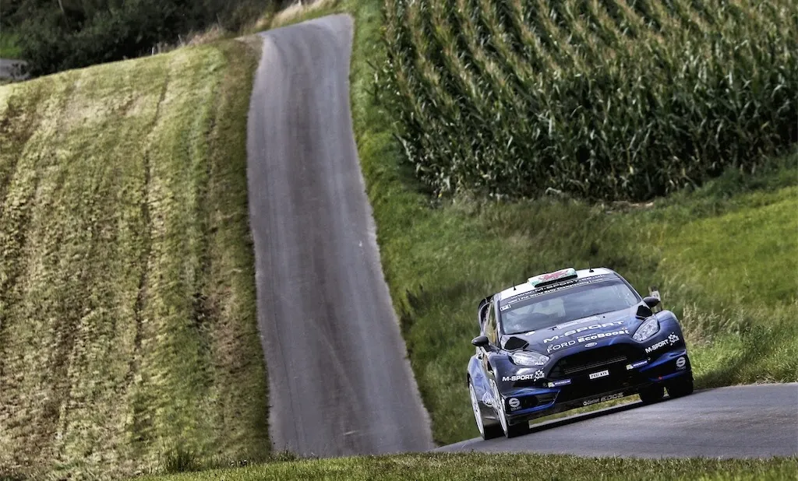
Best of Rally Live - Michelin Motorsport Rally
Evans' first ever stage win was actually the Power Stage of Rally Germany in 2014. In a rally known for its unpredictability, the 2014 version of Rallye Deutschland was certainly the most unpredicatble, with it being known as the rally nobody wanted to win. Evans did win the Power Stage though, and also finished 4th, his best finish on tarmac at the time, and also his equal best finish ever.
Adrien Fourmaux - SS16 Safari Rally 2021
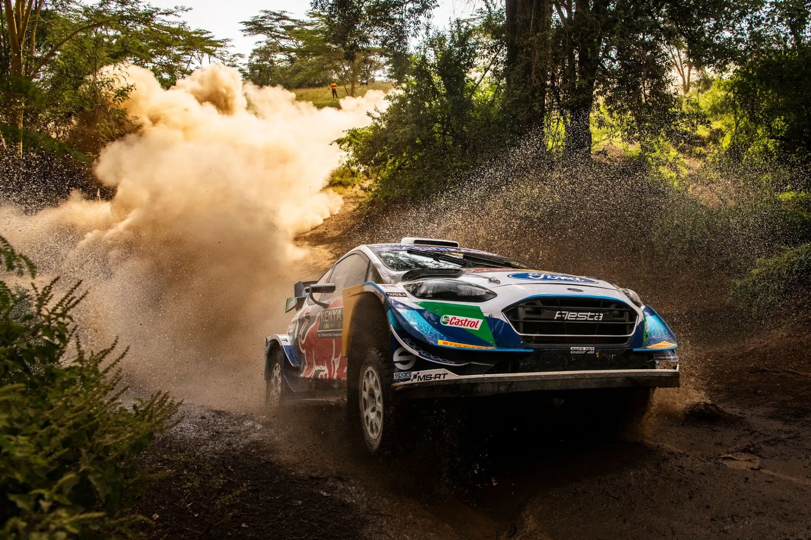
Jaanus Ree / Red Bull Content Pool
Fourmaux's first stage victory came on his 3rd WRC event with the Fiesta WRC, in Kenya. His stage win was also M-Sport's first stage win of the season! The Frenchman won the first pass of Malewa on Sunday by 4.1s. He would finish the rally in 5th overall, just 1 tenth behind team-mate Gus Greensmith due to a 10s time penalty, courtesy of a very imaginative cut he took that help him get that maiden stage win.
Kalle Rovanperä - SS11 Rally Sweden 2020
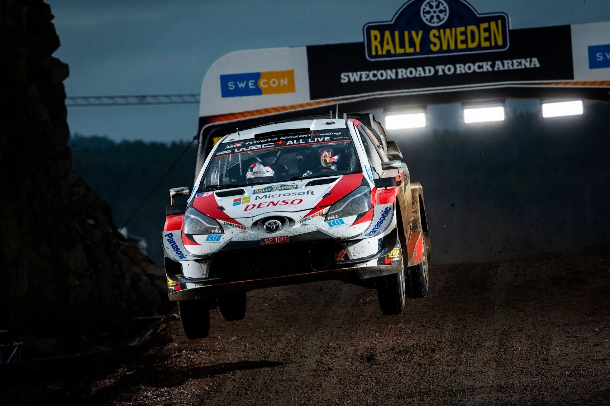
Jaanus Ree / Red Bull Content Pool
Kalle Rovanperä became the 5th youngest stage winner ever when he won the Power Stage of the 2020 Sweden Rally! The young Finn was embroiled in a battle with his teammate Sebastien Ogier for the last spot of the podium, and his stage win gave him the edge versus Ogier, beating him by 3.4s to 3rd. In a rather farcical rally due to the lack of snow, Kalle celebrated his first stage win and also his first podium, as well as his first ever Wolf Power Stage victory!
Takamoto Katsuta - SS16 Rally Monza 2020
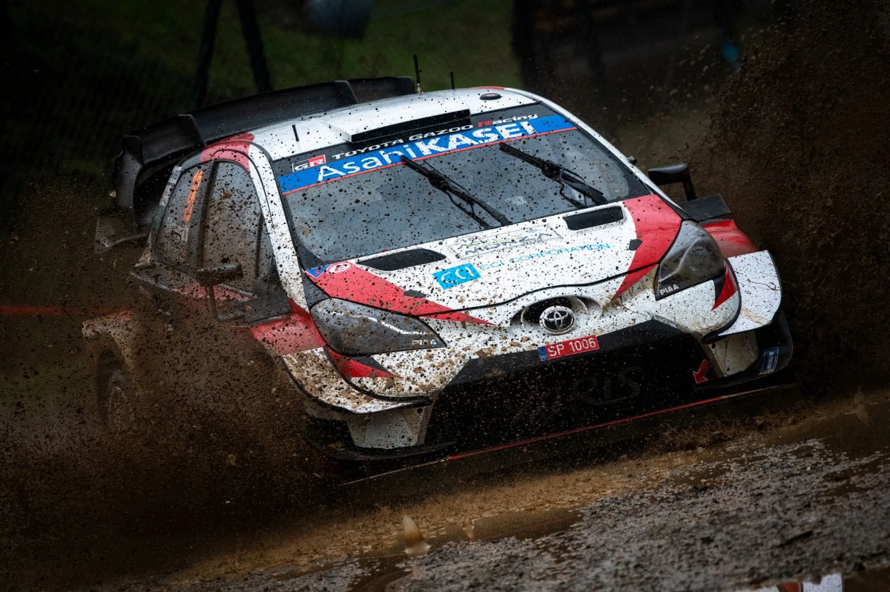
Jaanus Ree / Red Bull Content Pool
The season finale of the 2020 WRC season was bitter-sweet for Taka. The Japanese driver crashed out in embarrassing fashion on the first stage of the rally, in the Monza circuit, but he also won the rally-ending Power Stage! In rainy and very muddy conditions, Katsuta to his surprise won SS16. I say to his surprise because he didn't want to win the stage, as he didn't want to interfere between Evans and Ogier who were fighting for the title, and thus didn't want to take points away from the Super-Rallying Elfyn Evans.
Andreas Mikkelsen - SSS19 Rally Deutschland 2008
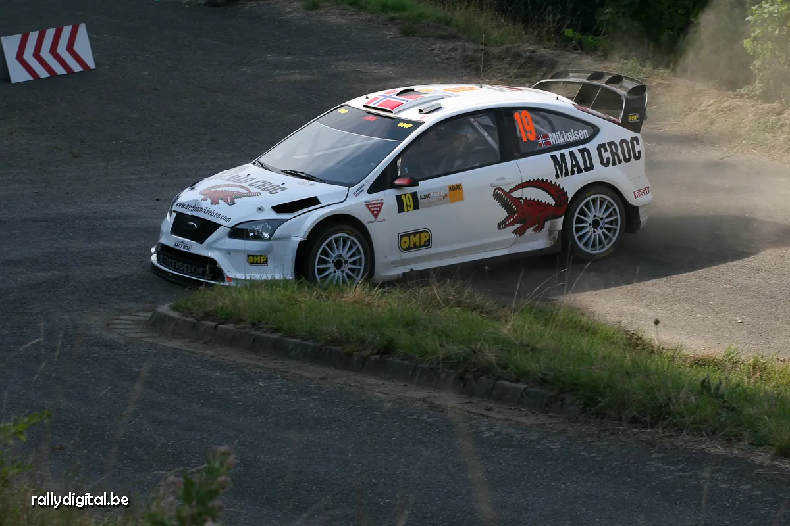
rallydigital.be
A 19 year old Andreas Mikkelsen became, at the time, the youngest driver to win a stage in the WRC, when he matched Sebastien Loeb's and Petter Solberg's times at the last stage of Rally Germany in 2008. Mikkelsen finished the rally in 11th, driving a Ford Focus RS WRC prepared by Ramsport.
Daniel Sordo - SS10 Rally Catalunya 2006
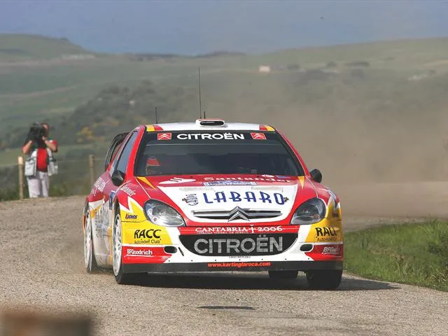
Eurosport Pictures
Dani Sordo got his first fastest stage time on his home rally in 2006 at a stage where teammate Xevi Pons crashed out from 3rd. He beat Marcus Gronholm on SS10 by 1 second. It was also the young Spaniard's first ever podium finish, finishing 2nd to Sebastien Loeb. Sordo would get another 3 podiums in Corsica, Sardegna and Germany, and he would end his debut season with another 9 stage wins.
Esapekka Lappi - SS5 Rally Sardegna 2017
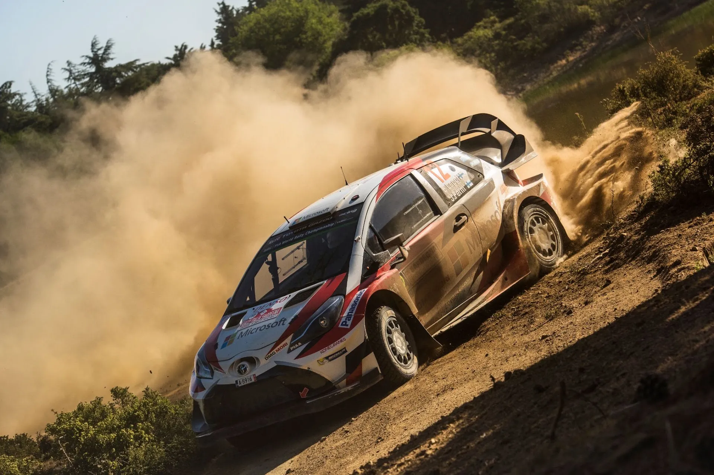
Jaanus Ree / Red Bull Content Pool
Lappi's 2017 was supposed to be a full season, but Volkswagen's withdrawal meant his WRC debut had to be postponed to Portugal. On the event after Portugal in Sardinia, Lappi put on a show. The Finnish driver won 6 stages in Sardinia, including the Wolf Power Stage, en route to a career best 4th place! His first stage win, SS5, also came with him missing the 2nd gear of his Yaris WRC!
Mārtiņš Sesks - SS3 Rally Latvia 2024
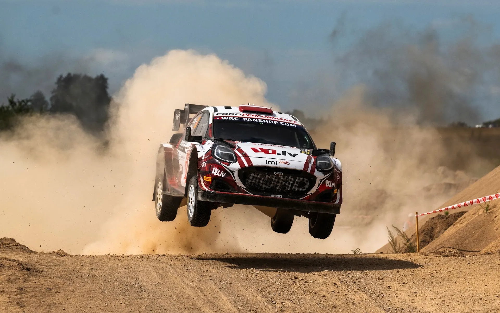
Jaanus Ree / Red Bull Content Pool
Mārtiņš Sesks WRC campaign might have ended in heartbreak for the Latvian, with him missing out on a home podium on the last stage of the rally, but he still made a heck of an impression in the two WRC rallies he did with the Puma Rally1. The Latvian came close to a stage win in Poland, despite missing the extra horsepower that comes with the hybrid unit, but ultimately he'd have to wait until his home rally. Sesks won SS3 and SS4 in his home event, beating eventual winner Kalle Rovanpera by 1.6s and 0.1s in each stage.
Sami Pajari - SS9 Rally Finland 2024
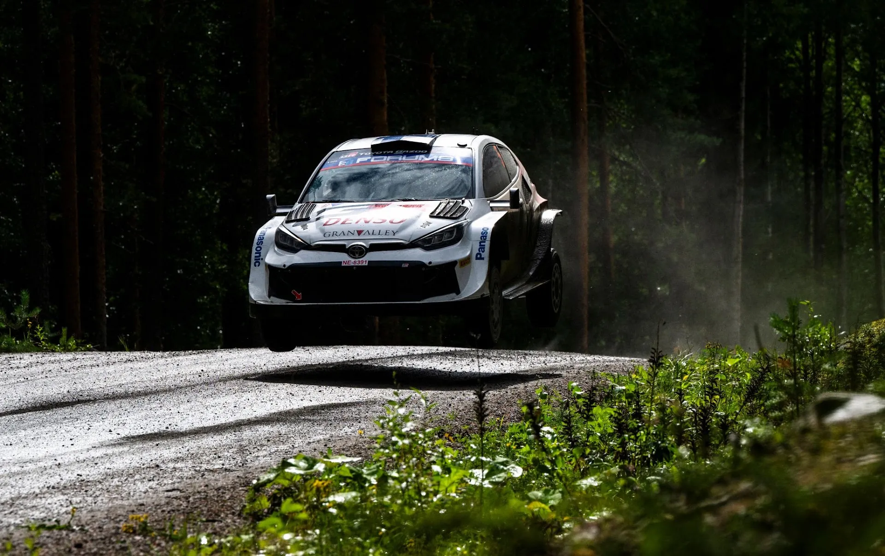
Jaanus Ree / Red Bull Content Pool
As mentioned in the intro, Sami Pajari won the second pass of Ruuhimaki on his debut! He beat eventual winner Sebastien Ogier by half a second, to cap off a rather tricky day for him, in the best way possible. The young Finn would finish in 4th, impressing everyone in his first outing in a Yaris Rally1.
Gus Greensmith - SS7 Rally Monte Carlo 2024
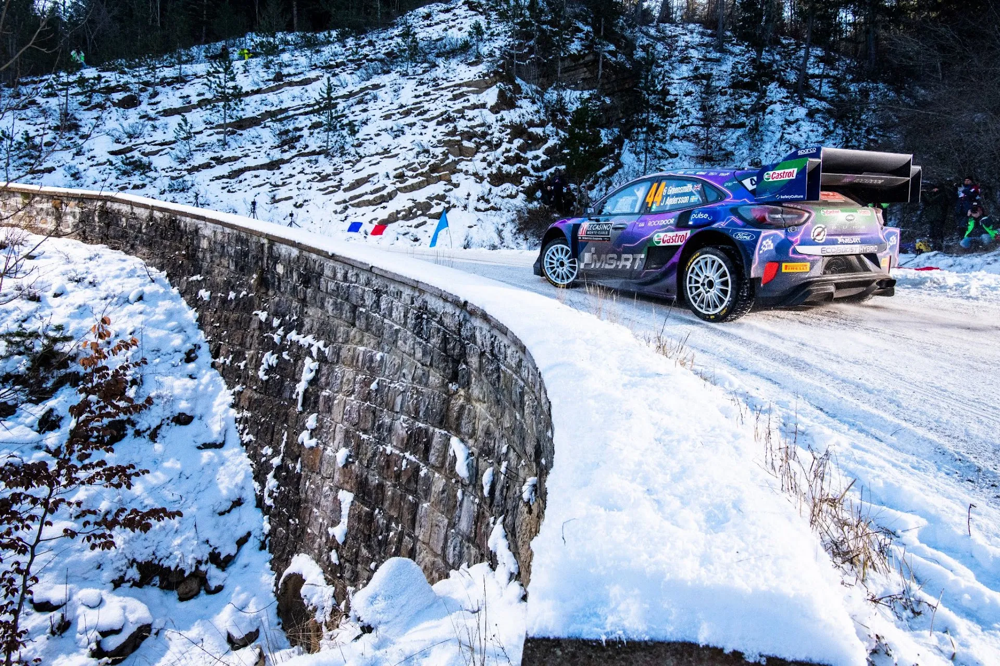
Jaanus Ree / Red Bull Content Pool
Switching to the WRC2 field now, Gus Greensmith got his first stage win on the first event of the Rally1 era in Monte-Carlo 2 years ago. In what might have been the Brit's best drive to date, he managed to beat both Sebastien Ogier and Sebastien Loeb for his maiden stage win. Despite mechanical gremlins with his Puma and a puncture on SS10, he still finished in 5th, a career best result on tarmac.
Jari-Matti Latvala - SS5 Rally Norway 2007
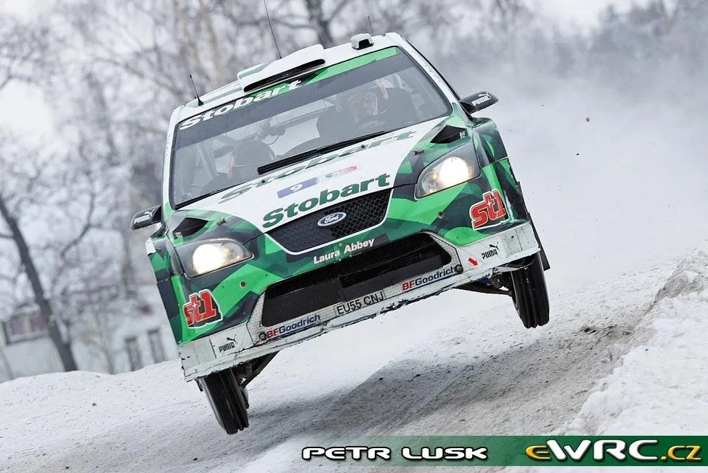
Petr Lusk / eWRC-Results
Jari-Matti Latvala finished 6th in Rally Finland last weekend, with this being the 16th season where the Finn scores points in! Latvala made his debut all the way back in 2003 with an older Focus WRC prepared by Ford in Acropolis, but had to wait all the way until 2007 to get his maiden stage win. He won SS5 of Rally Norway, beating Sebastien Loeb by 4 seconds, to become the now 8th youngest stage winner in the WRC. The Stobart Ford driver would finish the event in 5th, to complete a rare 1-2-3-4-5 for Ford!
Georg Linnamäe - SS5 Rally Sweden 2024
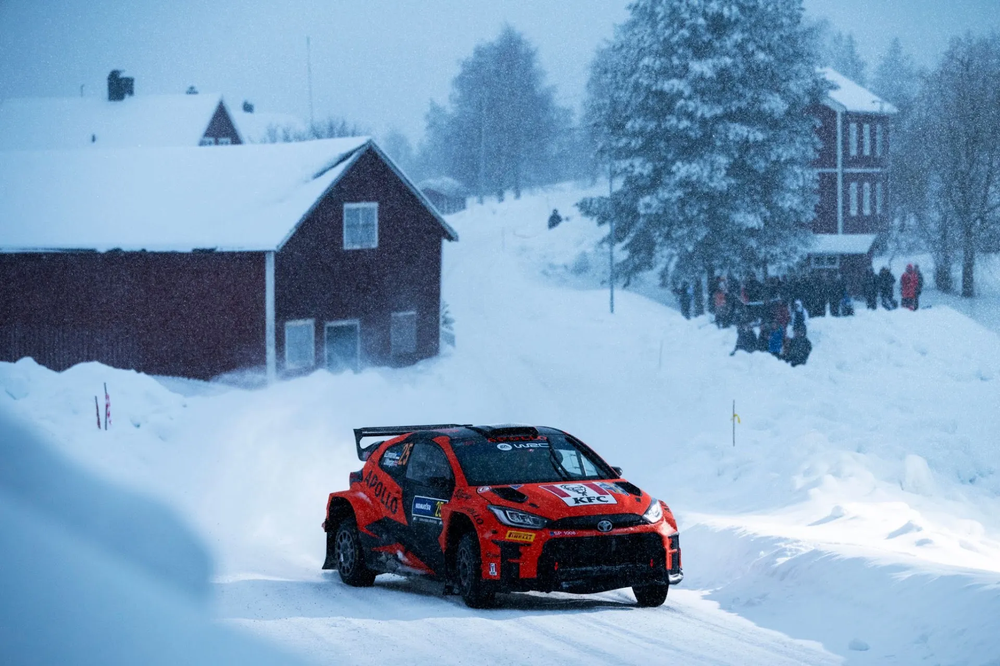
Jaanus Ree / Red Bull Content Pool
In terrible conditions that made life hell for the earlier runners, Georg Linnamäe managed to get his first and only stage win as of now. Such difficult were the conditions with fresh snow constantly falling onto the stage, that no Rally1 was in the top 5 of the stage classifications! Linnamäe would also finish the next stage in 2nd overall, and in the end, he got a WRC2 podium, finishing in 3rd in his class, and 7th in the overall classification.
Josh McErlean - SSS16 Rally Portugal 2022
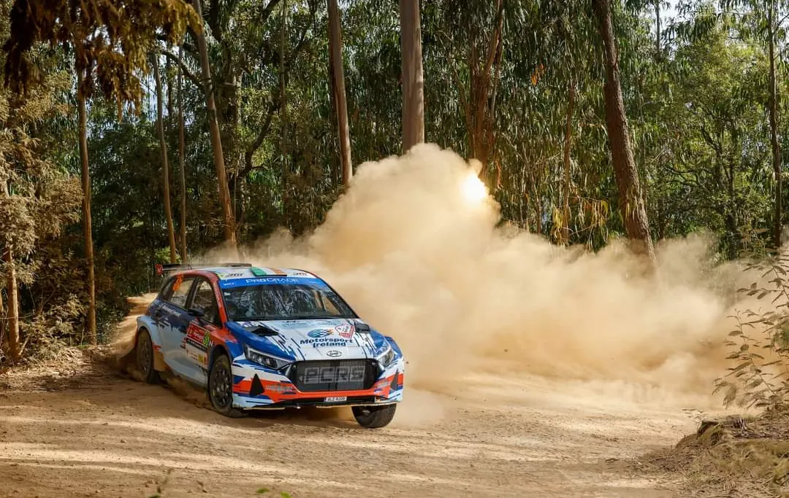
In what was definitely one of the worst Super Specials ever, the Super Rallying Josh McErlean got his first ever, and only, stage win, driving a Hyundai i20 N Rally2! In a very slippery and slow "Mickey Mouse" stage that saw no Rally1 cars in the top 10, the Irish driver went 2.7s faster than Nikolay Gryazin to get a stage win! Such dramatic was the change in grip for the later runners, that McErlean ended up 7.5s faster than the fastest of the Rally1 cars!
Martin Prokop - SSS1 Rally Sardegna 2015
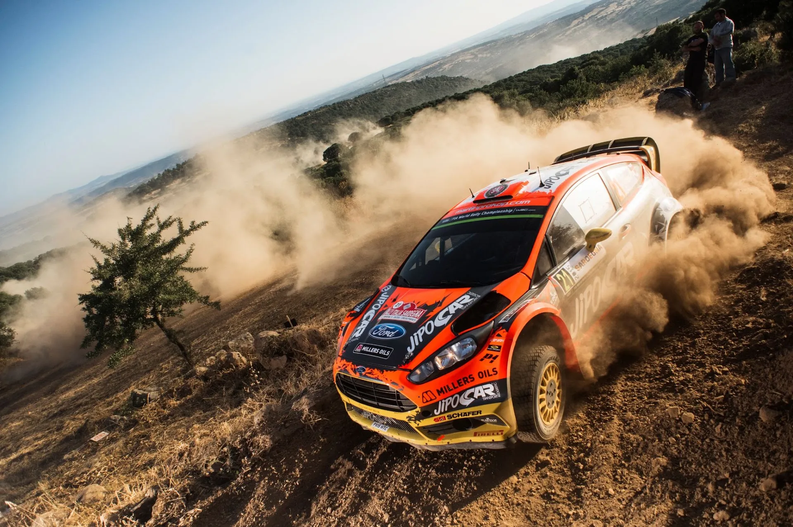
Jaanus Ree / Red Bull Content Pool
Martin Prokop scored points in Sardegna this year, and coincidentally, that's where he got the first of his two stage wins almost a decade ago. The Czech privateer won the opening Super Special of the rally back in 2015. He would retire from the rally on Stage 13, after running as high as 7th, driving a Fiesta RS WRC.


Comments